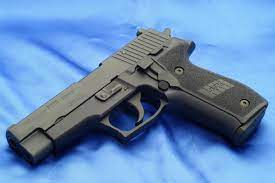

Sig Sauer P226
Описание
Автоматика пистолета работает по принципу отдачи ствола при его коротком ходе. Запирание осуществляется при помощи снижающегося ствола, сцеплением верхнего выступа его казенной части с увеличенным окном затвора-кожуха для выброса стреляных гильз. Снижение происходит при взаимодействии наклонной плоскости подствольного прилива с осью фиксатора ствола. Ударно-спусковой механизм курковый, двойного действия с предохранительным взводом курка. Имеются различные варианты УСМ. Спуск с предупреждением. Оружие имеет расположенный с левой стороны рамы рычаг безопасного спуска курка. При нажатии на этот рычаг он опускается вниз, поднимая шептало, и расцепляет его с прорезью боевого взвода курка.
История:
Пистолет SIG Sauer P226 был разработан в 1981[1] году для участия в американском конкурсе ХМ9 на новый 9-мм пистолет для армии США. Он представлял собой по сути пистолет SIG Sauer P220, который состоял на вооружении вооружённых сил Швейцарии.
По итогам конкурса 1984 года годными были признаны только Р226 и итальянский пистолет Beretta 92.